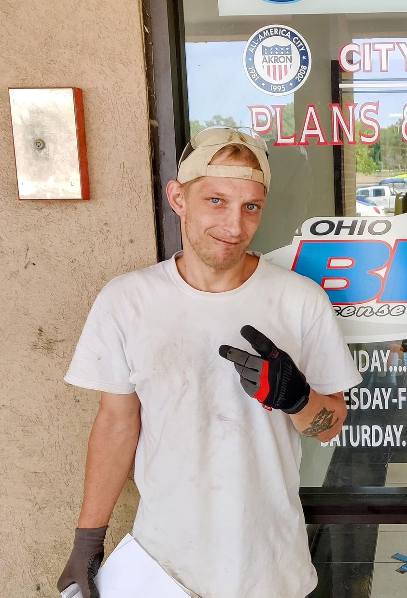

Mobile uploads
I got to attend the most beautiful celebration of life event yesterday.
The person who we were celebrating was clearly so interesting and had such a full life. They read endless books and had an encyclopedic knowledge of things like DC comics and manga and a wide variety of other books.
There was also this really cool pin collection of hers that we were allowed to take from. These pins told a story of political and spiritual knowledge that was clearly thoughtful and rich. I took a Mocking Jay pin from the Hunger Games that I’ve always wanted.
For this story, it’s important to add that this person had autism and died of cancer in their 30s.
The most amazing part of the celebration was all the people that attended the event. This person had SO MANY people that loved them and accepted them. That was the biggest takeaway for me. A packed pavilion with accepting and loving people. It was so hopeful and so beautiful.
The photo attached to this post is of Andrew. He died of an overdose in a plastic shed in my yard, also in his 30s.
His celebration of life was a half hour telephone conversation with his brother recounting every bad thing Andrew ever did since he was 13.
No one in Andrew’s family accepted his body. I believe Friends in Tents paid for his cremation and still has his ashes.
Whenever I bring up Andrew to someone in the Houseless community they always say that they think Andrew was murdered. And the story is that I murdered him for money.
I have a very long list of rumors of cruel and atrocious acts that I’ve supposedly done to fleece money out of homeless people.
These stories are tragic on multiple levels. The worst part of it all is that these people keep coming around me even though they have heard about what a dark, evil human I am. They don’t have anyone else. They’d rather spend time with Satan than the void of nothingness that is the other alternative.
The other tragedy of it all is that their perspective of the world is that there is no goodness to be found anywhere. And if you think you have found something good it surely is only because the person has some alternative agenda.
Kristyn told me recently that she wasn’t allowed to watch Disney princess movies as a kid because she shouldn’t fill her head with ideas that things could work out and life could be happily ever after.
I love when I get to hold the two extremes of humanity simultaneously in my head and heart.
As I was stuffing my face full of countless sandwiches and desserts that were so plentiful at this celebration of life that it didn’t appear we were even making a dent in them, I was so happy to be surrounded by all these beautiful people who cared for people who didn’t always fit the mold society demands of us. It was an event proving the abundance and goodness and light of the world. 
And I was simultaneously so sad for all my Houseless friends that literally are dying alone and cold on the streets of Akron Ohio. And if it weren’t for a few rag tag homeless supporters, would be completely forgotten and alone in a morgue somewhere. Where is their celebration of life? Where is their loving and supportive family? Where is their acceptance of a unique, special and truly valuable life?
I’m now of the mindset that I see so much unspeakable tragedy and uplifting sacred goodness simultaneously that I think they are probably entwined. Their entanglement starts at the molecular level and replicates all the way through the entire multiverse. When one atom goes up another atom must go down. And so it goes through all of space and time.
And so we must also hold both states of being within ourselves. If we acknowledge the horror of life we must also equally acknowledge the brilliant beauty of life.
I’m so deeply thankful that I have been given this opportunity to be aware and conscious of the fact of equal good and bad, Black and White, light and dark. My perspective is so much more wide and varied these days. I’m so incredibly thankful for that. I am profoundly grateful for the ever expanding conscious awareness of truth and reality I have been given.
All of these great learnings have come, not from books and school, but from my experiences with humanity. I’m just thankful for it all.